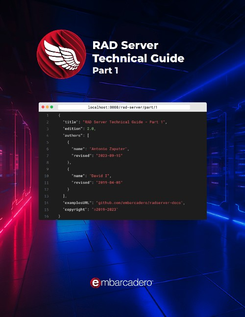

RAD Server Technical Guide
Published by : Embarcadero
Writed by : David I.
Published date : 15/09/2023
Language :  English
English
Web site : https://lp.embarcadero.com/radserverguide
About RAD Server Technical Guide
RESTful architectures are a key driving force behind modern API first application design. This book focuses on the RAD Server framework included with RAD Studio (Delphi/C++Builder) for developing such platforms.
RAD Server is a full backend MEAP (Mobile Enterprise Application Platform) that enables Desktop, Mobile and Web frontend development in any language, and this book is designed as a definitive guide for developers.
The benefit of a MEAP is that you have a pre-built cloud or on-prem server with many core capabilities (such as push notifications, user tracking and analytics) that you can plug into rapidly to deliver remote database and functional access.
This guide to Embarcadero RAD Server, originally authored by David I (2019), is in its second edition, revised by Antonio Zapater (2023), which includes many additional features added based on market demand since RAD Servers Launch. The second edition is also supported by a comprehensive video series supporting each chapter, along with source code examples on GitHub.
Where to buy ?
If this book is still available for sale, you probably can order it on its website.
Table of content
01 - What is RAD Server?
Introduction
RAD Server Overview
Building RAD Server based applications – Seven Key Aspects
Requirements for Building a RAD Server Applications
Using the RAD Studio IDE
RAD Server Testing and Deployment Licenses
Roundup of Core RAD Server Features
Core Features
See Also
02 - Using the RAD Wizard to Create a “Hello World”
Building REST Based Services
Using the RAD Server Project Wizard
The Wizard RAD Server Project and Source Code
Configuring RAD Server for your first Application
Testing your first RAD Server Application
See Also
03 - Creating your first CRUD Application
Building REST Based Services with CRUD functionalities
Explaining the project generated
Building and testing the project
Additional features of TEMSDatasetResource
04 - REST Debugger
What is REST Debugger and where to find it
Sending our first PUT Request with REST Debugger
Other features included with REST Debugger
05 - Using FireDAC Batch Move and JSONWriter
Returning JSON Database Data Using a Memory Stream
Using FireDAC’s BatchMove, BatchMoveDataSetReader and BatchMoveJSONWriter
See Also
06 - JSONValue, JSONWriter and JSONBuilder
Frameworks for Handling JSON Data
Using JSONValue
Example using JSON classes
Using JSONWriter
Example using JSONWriter
Using JSONBuilder
See Also
07 - Creating your own customized endpoints
An example of good practices
Avoiding APIs to be too chatty
Adding sub-resources
Adding nested data in a response (Master/Detail)
Testing the new implementations
Creating custom GET, POST, PUT, DELETE methods
Handling response errors
See also
08 - Accessing the built-in analytics
Main Characteristics
Accessing the RAD Server Console
09 - Deploying RAD Server
Where can RAD Server be deployed
Using the installers from GetIt
Prerequisites to deploy RAD Server manually
Deploying on Windows manually
InterBase Server engine
RAD Server installation
Web Server (IIS or Apache)
Deploying on Linux manually
Compatible Distros
Installing InterBase Server engine
Registering and starting InterBase Server
Running InterBase as a Service
Installing RAD Server
Setting Up RAD Server for Apache
Deploying on Docker
Option 1: PA-RADServer-IB
Option 2: PA-RADServer
Copying RAD Server modules compiled with RAD Studio
Configuring the EMSServer.ini file
10 - RAD Server Lite
What is the Lite version?
How to get a RAD Server Lite License
Deploying a RAD Server Lite project
The Files to Deploy
Deploying manually
Using the Deployment Wizard
MSVC runtime
Creating the Production Database
Proxy Configuration
For Linux